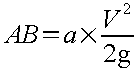

Voir exemple : Les Déversoirs d'orage à crête haute
Ce paragraphe introduit les déversoirs d'orage et traite particulièrement le déversoir à crête haute.
Sur un réseau unitaire, on désigne par déversoir d'orage l'ensemble du dispositif dont la fonction est d'évacuer directement et sans traitement vers le milieu naturel, les pointes de ruissellement de manière à décharger le réseau aval ainsi que les stations d'épuration.
Dans tous les cas de figure, le déversoir d'orage comprend :
un ouvrage de dérivation,
un canal ou collecteur de décharge conduisant l'eau déversée à un émissaire naturel (ruisseau, rivière ), y compris l'ouvrage de rejet lui-même au droit de l'émissaire.
Le déversoir d'orage est raccordé :
à l'amont: au collecteur d'arrivée amenant les eaux unitaires,
à l'aval : au collecteur de départ qui transporte vers la station d'épuration les eaux à épurer.
L'ouvrage de dérivation peut être constitué de tout autre organe qu'un déversoir au sens hydraulique du terme.
Le collecteur de décharge peut être très court (cas d'égouts longeant le ruisseau).
Un ouvrage ou un système de stockage (bassin d'orage) peut être adjoint à l'ouvrage de dérivation pour stocker temporairement une partie du flot (premier flot d'orage notamment).
La construction d'un déversoir d'orage résulte théoriquement d'une étude économique, en plus de considérations techniques.
Il ne peut y avoir de déversoir que s'il y a un émissaire pouvant recevoir les eaux d'un collecteur de décharge, aussi bien sous l'angle débit que sous l'angle pollution.
Quand c'est le cas, le nombre et la position des déversoirs résultent de comparaisons économiques. Chaque fois que l'on met un déversoir, on crée un ouvrage coûteux, mais on réduit le diamètre du collecteur aval. Il n'y a donc pas de règle générale.
Les déversoirs d'orage pourront être placés :
sur des collecteurs secondaires afin de limiter les débits d'apport aux collecteurs principaux,
à l'entrée d'ouvrages tels que les bassins d'orage, les siphons, etc.,
à l'entrée des stations d'épuration.
Le déversoir d'orage est un ouvrage généralement encombrant par lui-même et qui se situe dans un site urbain, dont le sous-sol est souvent encombré. A cela s'ajoute le fait que cette zone urbaine est évolutive, et qu'il faut donc prendre garde à ne pas figer, au niveau de la conception, les capacités de l'ouvrage. Il est donc indispensable de prévoir la possibilité de modifier le calage du seuil de déversement, tout en étant sûr que ces modifications seront exécutées dans des conditions satisfaisantes, tant au niveau hydraulique qu'au niveau des charges polluantes déversées.
La nature du terrain peut ne pas être favorable (on se trouve souvent à faible distance d'une rivière) et l'ouvrage de rejet peut être lui-même délicat à réaliser :
les fondations,
la protection contre les crues.
Dans hydrouti, les contraintes principales définies sont :
la cote de radier imposée en amont de la canalisation d'arrivée,
la cote de radier imposée à l'aval du collecteur de départ,
la longueur disponible entre ces deux points,
la cote des plus hautes eaux au droit du rejet du déversement,
la cote de radier imposée au droit du rejet,
la longueur de la canalisation de décharge.
On trouve les mêmes contraintes que pour la plupart des ouvrages en assainissement :
présence de matières organiques, d'où risques de mauvaises odeurs si ces matières peuvent s'accumuler et fermenter en certains points des ouvrages,
présence de matériaux flottants, huiles, graisses, mousses qui risquent également de s'accumuler,
présence de corps étrangers, morceaux de bois, par exemple, qui peuvent obstruer certaines ouvertures,
présence de matières en suspension qui risquent de se déposer en quantités importantes (sables) et de perturber, voir de modifier le fonctionnement de l'ouvrage.
Ces contraintes deviennent plus particulièrement gênantes lorsqu'il s'agit de déversoirs d'orage plus élaborés, qui peuvent être équipés de certains mécanismes ou pièces mobiles (vannes, clapets, etc), et lorsqu'il y a bassin de stockage (dépôts qui fermentent, odeurs, nécessité de curage régulier et évacuation des boues, matériaux flottants à évacuer).
Les contraintes d'exploitation sont essentiellement liées :
à l'accessibilité des ouvrages, pour en assurer une maintenance et un entretien satisfaisant, au regard des objectifs fixés au départ lors de la conception et concernant notamment les débits déversés et la qualité des eaux déversées,
au fonctionnement réel, tant d'un point de vue quantitatif que qualitatif, de l'ouvrage déversoir d'orage,
au nombre et à la position, sur les réseaux concernés, des différents déversoirs, dont les effets cumulatifs peuvent engendrer des problèmes importants sur le fonctionnement global des stations d'épuration, ainsi que sur la qualité et la quantité des eaux déversées en milieu naturel.
Le seul élément qui caractérise réellement un déversoir d'orage est l'ouvrage de dérivation.
On peut distinguer pour celui-ci :
les ouvrages à seuil déversant,
les ouvrages dont le fonctionnement est lié à autre chose qu'un seuil déversant, et notamment : ouverture dans le radier, siphon ou orifice latéral, système de régulation avec vanne.
Dans ces ouvrages, un seuil déversant est prévu qui permet, à partir d'un certain débit arrivant, de dériver une partie de celui-ci par-dessus le seuil.
On essaye ainsi de limiter le débit acheminé vers la station d'épuration à une valeur déterminée, le supplément étant déversé.
Pour mieux contrôler le débit à partir duquel le déversoir doit fonctionner et mieux limiter le débit acheminé vers la station d'épuration, on prévoit souvent en plus un étranglement sur le collecteur de départ (masque ou tronçon de diamètre réduit appelé tronçon d'étranglement) : cela permet de caler plus haut la cote du seuil déversant.
Compte tenu de la présence ou non de cet étranglement, on distingue donc deux grandes catégories :
les déversoirs à seuil haut,
les déversoirs à seuil bas.
Le seuil haut est un déversoir classique dont le fonctionnement est un peu perturbé par une vitesse d'approche de l'eau parallèle au seuil, dans le cas du déversoir latéral. Mais cette vitesse est faible et on peut sans inconvénient utiliser les formules classiques.
A l'opposé, le déversoir à seuil bas est en quelque sorte une ouverture faite latéralement dans un collecteur. Suivant la pente du radier, les conditions hydrauliques d'écoulement à l'amont et à l'aval, la fraction de débit déversée, etc., la ligne d'eau au droit du déversoir peut présenter différentes configurations (hauteur d'eau plus faible en tête du déversoir qu'en extrémité, ou le contraire, ressaut à l'amont, à l'aval, au milieu). Il y a donc de très nombreux cas de fonctionnement possibles, plus ou moins bien connus, ce qui explique en partie le nombre de formules proposées par différents auteurs, parfois contradictoires.
Du point de vue hydraulique, le fonctionnement des déversoirs à seuil haut est beaucoup mieux connu que celui des déversoirs à seuil bas.
On trouve dans cette catégorie toute une série de dispositifs, parfois appelés de régulation, qui font intervenir différents principes de fonctionnement. Mais si on se limite aux ouvrages habituellement utilisés, on trouve essentiellement :
ouvrage à ouverture de radier,
ouvrage avec siphon,
ouvrage avec orifice,
ouvrage avec vannes.
Du point de vue hydraulique, la solution la plus sûre, pour limiter le débit envoyé dans le collecteur aval, est d'avoir, à la sortie du déversoir d'orage, une mise en charge d'un tronçon de ce collecteur pour le débit limite admis.
De cette façon, tant que l'on a le débit de temps sec, celui-ci transite normalement dans le collecteur aval. Quand on arrive au débit limite admis, ou peu avant, il y a mise en charge jusqu'au niveau d'arasement du seuil déversant. Si le débit augmente encore, l'excédent passe au-dessus du seuil déversant. En effet, comme la lame d'eau sur le seuil a toujours une hauteur relativement faible, la variation de charge, donc de débit dans le collecteur aval sera très faible (car proportionnelles à la racine carrée de la charge).
D'où la notion de déversoir à seuil haut qui permet en même temps d'avoir des vitesses d'approche plus faibles, et une tranquillisation de l'écoulement permettant une meilleure connaissance des conditions hydrauliques de fonctionnement dudit déversoir.
Le fonctionnement de ce système est donc simple et clair. Ce système est à retenir lorsque l'écoulement dans le collecteur d'arrivée est en régime fluvial ou si le ressaut correspondant au passage du régime torrentiel au régime fluvial peut être admis à l'amont de l'ouvrage.
Chaque fois qu'on prévoit un déversoir d'orage à un endroit dé-terminé, il faut connaître en ce point les débits caractéristiques pouvant transiter dans l'ouvrage :
Ces valeurs peuvent être saisies directement par le projeteur ou calculées à partir du module « Bassin versant »
Cette conduite est caractérisée par son diamètre et sa pente. On calcule les hauteurs de remplissage et les vitesses correspondantes pour le débit d'orage, le débit de référence et le débit d'eaux usées de temps sec.
Le calcul permet également de définir le régime d'écoulement (fluvial - torrentiel) et, par modifications éventuelles des dispositions constructives, de l'accentuer ou de le transformer dans un sens ou dans l'autre.
Cette conduite joue très généralement le rôle de canalisation de tranquillisation. Le tronçon de tranquillisation ne recevra aucun apport latéral et devra avoir, si possible, une longueur égale à 20 fois le diamètre.
Cette conduite, caractérisée par son diamètre et sa pente; assurera, selon le type de fonctionnement recherché, soit un écoulement en charge avec effet d'étranglement, soit un écoulement libre. Cette conduite devra écouler les débits de pointe d'eaux usées sans mise en charge. En cas d'étranglement, le diamètre minimal conseillé est de 200 mm.
![[Attention]](chmicons/caution.png) | Attention |
|---|---|
Cette version d'Hydrouti ne prend en compte que les écoulements avals en charge. |
Calcul de la longueur de la conduite étranglée
Le déversoir fonctionnera correctement lorsque, pour le débit de référence, la charge hydraulique s'exerçant sur la conduite étranglée sera inférieure à la hauteur de la crête (sinon il y aura surverse avant que le débit de référence souhaité ne soit évacué vers l'aval).
BC = EB – EC avec :
EB = L x pente motrice (Imot),
EC = L x pente radier (Irad).
Donc BC = L x (Imot - Irad)
BC = AD - AB – CD avec :
|
AD |
hauteur de la crête déversante (H) |
|
AB |
 |
|
a |
représente un coefficient incluant la perte de charge à l'entrée de la canalisation étranglée |
|
CD |
diamètre de la canalisation (D) |
D'où :

Il en résulte :
Une longueur initiale est proposée par le projeteur. La longueur finale sera définie après calcul des caractéristiques de la chambre de déversement.
Elle est caractérisée par la longueur et la hauteur de la crête de déversement ainsi que par la pente de la chambre d'écoulement.
Par défaut et en première approximation les valeurs suivantes sont appliquées :
|
Longueur du déversoir (en m) |
|
Qora (en m3/s) : débit d'orage |
|
Dam (en m) : diamètre de la canalisation d'amenée. | ||
|
Hauteur de la crête (en m) |
|
Pente du déversoir (en m/m) : 0.01 |
Tableau 2.5. Calcul des longueurs et hauteurs de la chambre de déversement
Pour caler son système, le projeteur peut modifier ces différentes données suivant les indications fournies : c'est à dire soit modifier les caractéristiques de la conduite aval (longueur ou pente ou diamètre), soit modifier les caractéristiques du déversoir (longueur ou hauteur ou pente).
![[Avertissement]](chmicons/warning.png) | Avertissement |
|---|---|
La modification ne doit porter que sur une seule des données. |
Après dimensionnement des caractéristiques géométriques de l'ouvrage déversant, une vérification du fonctionnement pour le débit d'orage est effectuée. Elle permet notamment d'évaluer la partition des débits (débit conservé / débit déversé). Le pro-jeteur doit alors s'assurer que le débit conservé reste dans une limite acceptable par le système (il est en général toléré 1.3 x le débit de référence au maximum).
Cette conduite relie le déversoir au cours d'eau émissaire. Elle est généralement relativement courte; on peut donc souvent prévoir un surdimensionnement.
Le dimensionnement de la canalisation de décharge doit vérifier que les conditions du fonctionnement hydraulique sont assurées :
vérification des niveaux d'énergie,
vérification du niveau d'eau afin d'éviter un fonctionne-ment en nappe noyée.
Le choix du coefficient d'entonnement est lié à la conception de la chambre, on retiendra :
0.75 si l'entrée est en forme de trompette, le départ oblique et s'il y a de bonnes conditions de pente dans la chambre de déversement,
1.00 si les arêtes d'entrées sont vives, le départ oblique et s'il y a de bonnes conditions de pente dans la chambre de déversement,
1.25 si les arêtes d'entrées sont vives, le départ à angle droit ou parallèle à la crête.